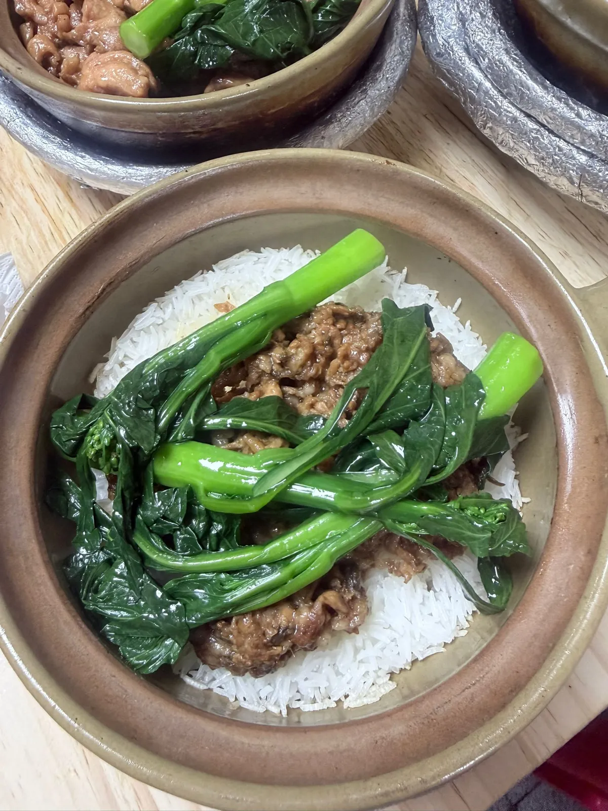
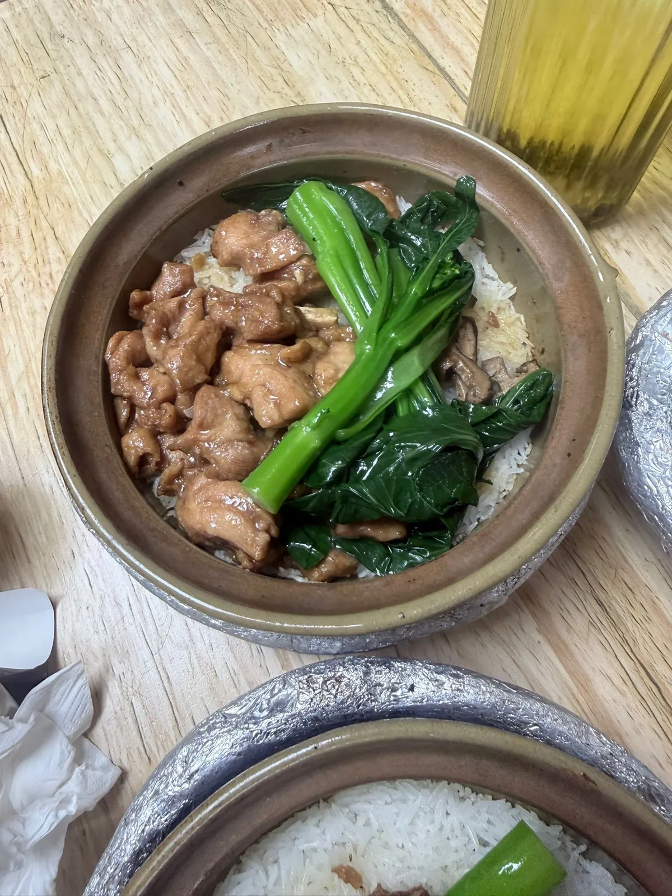

廣州北京路民記煲仔飯：飯焦贏，米飯同肉料平淡
我週末中午去咗廣州北京路嘅民記煲仔飯，一間標榜始創於 1979 年嘅老店。呢餐我自己畀錢，冇任何招待。結論放前面：飯焦做得好，米飯同肉料一般，反而係兩碗生滾湯出乎我意料。下面講我點得出呢個判斷。
到訪時嘅狀態
當日紀錄
到訪日期：
點咗嘅套餐：
實付：
門口等位：
入座到上枱：
平台評分：
平台分項：
平台人均：
平台獎項：
營業時間：
去到點行：
上面全部係會變嘅嘢，所以佢哋唔喺正文入面——實食紀錄呢個分區嘅硬規則之一就係價錢、等位、營業狀況一律入資料檔，正文只留判斷。
其中營業時間、人均、分項評分同步行距離係平台商戶頁嘅二手資料，唔係商戶官方公布，資料塊底部有註明平台幾時更新過。呢個同本站引政府網頁嗰種一手來源唔同級，所以分開標——出發前自己再確認一次。
平台嘅分項評分（口味、環境、服務）值得單獨睇一眼，因為佢拆開咗一個總分講唔到嘅嘢：呢間舖三項入面口味最高，環境最低。呢個同我落座嗰陣見到嘅一致——舖面唔大、忙、靠嗌，但佢冇打算賣環境。
現場：忙，但唔算失控
週末中午到，門口已經坐滿等位嘅人。等咗十幾分鐘入到去。店面唔大，收銀同店員忙到飛起，點餐基本上靠嗌——唔係嗰種有人帶位、遞餐牌、慢慢問你要咩嘅節奏。
入座之後大約十五分鐘上枱。煲仔飯係逐煲逐煲落嘅，高峰期十五分鐘我覺得算良心；喺香港週末去食煲仔飯，等半個鐘唔算離譜。呢一點我會記低，因為好多人以為老店排隊就一定慢，實際上佢哋嘅出餐流程反而好熟手。
飯焦：全餐最扎實嗰部分
飯焦係我覺得佢做得最好嗰樣，而且係明顯好，唔係「幾好啦」嗰種好。
具體係咁：每粒米結成完整嘅金黃鑊巴，唔係一撻一撻咁散開；焦脆度全煲均勻，唔會邊位燶咗中間仲係濕嘅；咬落去「咔嚓」一聲，唔黐牙、唔骼嘴。呢幾樣加埋，講緊嘅係火候控制——火太細出唔到殼，火太猛就會焦到苦，時間唔夠就會有位軟。三樣都要啱先做到均勻。
我覺得呢個係一間 1979 年開嘅舖應該有嘅嘢：唔靠花巧，靠一個做咗好耐、做到穩定嘅基本動作。
米飯同肉料：平淡
但同一煲入面，飯焦以外嘅部分就一般。
瘦肉飯嘅瘦肉嫩滑，火候冇問題，但調味偏淡。我唔係要好重口味，係覺得佢連煲仔飯應有嘅豉油鹹香都唔夠——食落去比較似「淨飯加肉」，唔係「一煲有味嘅飯」。

冬菇滑雞飯問題更明顯：雞醃得唔夠入味，冬菇嘅香氣冇完全釋放出嚟。冬菇係一樣好靠時間同油分帶香嘅嘢，佢喺煲入面應該慢慢滲落飯度；我食嗰煲，冬菇同飯仲係兩件獨立嘅嘢。

連埋兩煲一齊講，我嘅判斷係：飯焦搶咗米飯本身嘅香。你食落去最記得嘅係嗰層脆，中間嗰啲飯反而淡到冇乜印象。一煲好嘅煲仔飯應該係兩層都企得住。
我點錯咗：冇叫臘味
呢個我認係我嘅失誤，唔係佢間舖嘅問題。
煲仔飯嘅風味層次好大程度上靠油脂。臘味——臘腸、潤腸、臘肉——喺煲入面受熱之後會出油，油滲落米飯，帶住臘味嘅甜同酒香一齊落去。呢個係煲仔飯調味嘅主力來源之一。
我兩煲都揀咗瘦嘅：瘦肉、滑雞。兩樣都係低油脂嘅材料，等於我自己拆咗個調味系統其中一條腿，然後嫌佢淡。如果再去，我會叫返一煲臘味，先至公道啲評佢個米飯。
記低呢件事係因為佢係一個可以重複嘅判斷方法：評一樣嘢之前，先確認你有冇畀佢一個公道嘅組合。呢個同手沖參數入門嗰篇講嘅「一次只改一個」係同一套紀律——你唔可以同時改晒條件，然後怪個結果。
意外：兩碗生滾湯
套餐送兩份生滾湯，我原本完全冇期望——套餐附送嘅湯，通常係湊數。
結果兩碗都好過我預期：湯頭清甜回甘，唔係味精嗰種即時嘅鮮，係飲完之後喉底仲有嘢嗰種。杞子葉新鮮，唔係乾巴巴；豬肝薄切，冇腥味——豬肝有腥味通常係切得厚或者滾得耐咗，兩樣佢都避開咗。
我覺得呢兩碗湯比好多連鎖店嘅例湯好。呢個對比我覺得公道，因為兩者處境一樣：都係附送、都係唔收錢、都係大批做。
同深圳嗰間比
我之前喺深圳蛇口食過一間叫老顧客煲仔飯。兩間放埋一齊比，分野幾清楚：
- 調味：蛇口嗰間濃郁好多，豉油同臘味嘅香氣更突出。呢個係民記最弱嗰環。
- 飯焦：民記贏。單論鑊巴嘅完整度、均勻度同脆身，廣州呢間做得好過。
- 排隊：蛇口嗰間短好多。
- 人均：蛇口嗰間低。
所以綜合性價比，我會揀蛇口嗰間；但如果你係專登想食一層做得好嘅飯焦，民記係贏嘅。呢個唔係「邊間好啲」嘅問題，係「你想要邊樣」嘅問題。
結論同香港側嘅尺
我嘅結論好簡單：住附近，或者啱好喺北京路行街，可以試；專程遠道嚟，我覺得冇必要。
平台評分（見上面資料塊）我覺得同我嘅體感差唔多——唔係頂尖，但唔差，係一間穩定嘅老店應有嘅位置。呢個係少數我覺得平台個數同我自己判斷對得上嘅情況。
用香港嘅尺量：呢個價位喺香港食一煲煲仔飯係唔可能嘅，單論價錢係抵。但香港食煲仔飯嘅參照點好高——街邊瓦煲、明火、逐煲睇火嗰種舖仲有唔少。所以呢餐對一個香港讀者嚟講，價錢係優勢，出品唔係。
如果你想知道北京路呢一帶本身點行、幾點最逼，嗰啲唔喺呢篇；內地食飲地圖嗰邊寫嘅係區嘅結構，呢篇只係嗰個結構入面一個實測點。
常見問題
飯焦好但米飯淡，係咪矛盾？
唔矛盾，係兩件事。飯焦考嘅係火候：起唔起到完整嘅殼、脆得均唔均勻。米飯嘅味考嘅係調味同油脂：豉油夠唔夠、材料有冇出油滲落飯。呢間舖火候做得好，調味偏淡。兩樣可以同時成立。
唔叫臘味係咪令你嘅判斷唔公道？
部分係。臘味出油係煲仔飯調味嘅主力之一，我兩煲都揀咗瘦肉同滑雞，等於自己拆走咗一條腿。所以「米飯偏淡」呢個判斷要打個折——我評嘅係呢兩個組合，唔係呢間舖嘅全部。
同深圳嗰間邊間好？
睇你要咩。綜合性價比我會揀蛇口嗰間：調味濃郁、排隊短、人均低。單論飯焦，廣州民記贏。呢個唔係排名，係兩間舖強項唔同。